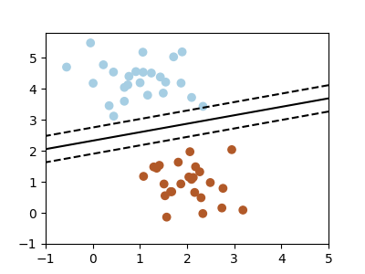

Note
Go to the end to download the full example code
3.4.8.8. Simple picture of the formal problem of machine learning¶
This example generates simple synthetic data ploints and shows a separating hyperplane on them.
import numpy as np
import matplotlib.pyplot as plt
from sklearn.linear_model import SGDClassifier
from sklearn.datasets import make_blobs
# we create 50 separable synthetic points
X, Y = make_blobs(n_samples=50, centers=2, random_state=0, cluster_std=0.60)
# fit the model
clf = SGDClassifier(loss="hinge", alpha=0.01, fit_intercept=True)
clf.fit(X, Y)
# plot the line, the points, and the nearest vectors to the plane
xx = np.linspace(-1, 5, 10)
yy = np.linspace(-1, 5, 10)
X1, X2 = np.meshgrid(xx, yy)
Z = np.empty(X1.shape)
for (i, j), val in np.ndenumerate(X1):
x1 = val
x2 = X2[i, j]
p = clf.decision_function([[x1, x2]])
Z[i, j] = p[0]
plt.figure(figsize=(4, 3))
ax = plt.axes()
ax.contour(
X1, X2, Z, [-1.0, 0.0, 1.0], colors="k", linestyles=["dashed", "solid", "dashed"]
)
ax.scatter(X[:, 0], X[:, 1], c=Y, cmap=plt.cm.Paired)
ax.axis("tight")
plt.show()
Total running time of the script: (0 minutes 0.049 seconds)